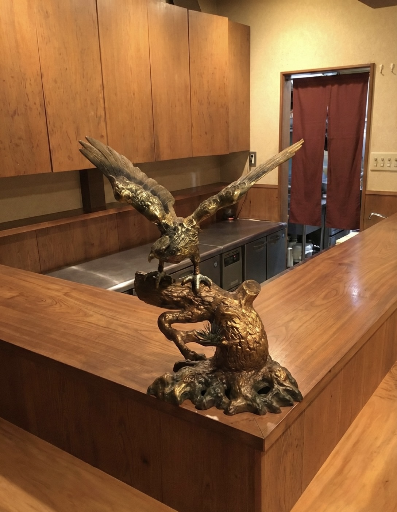
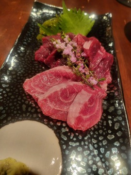
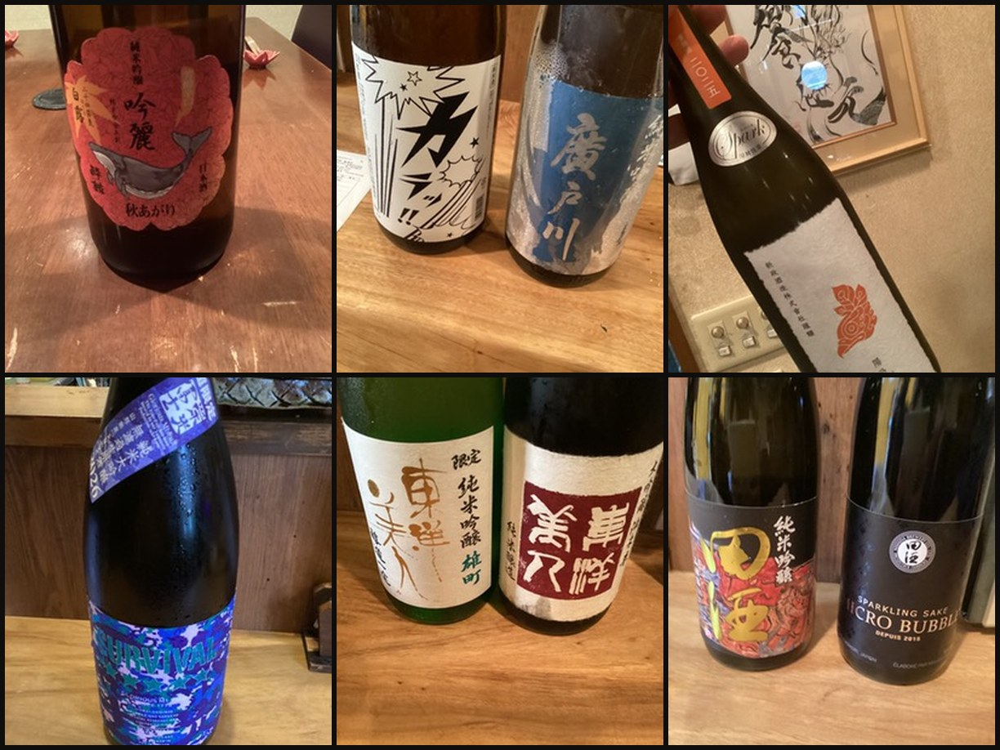
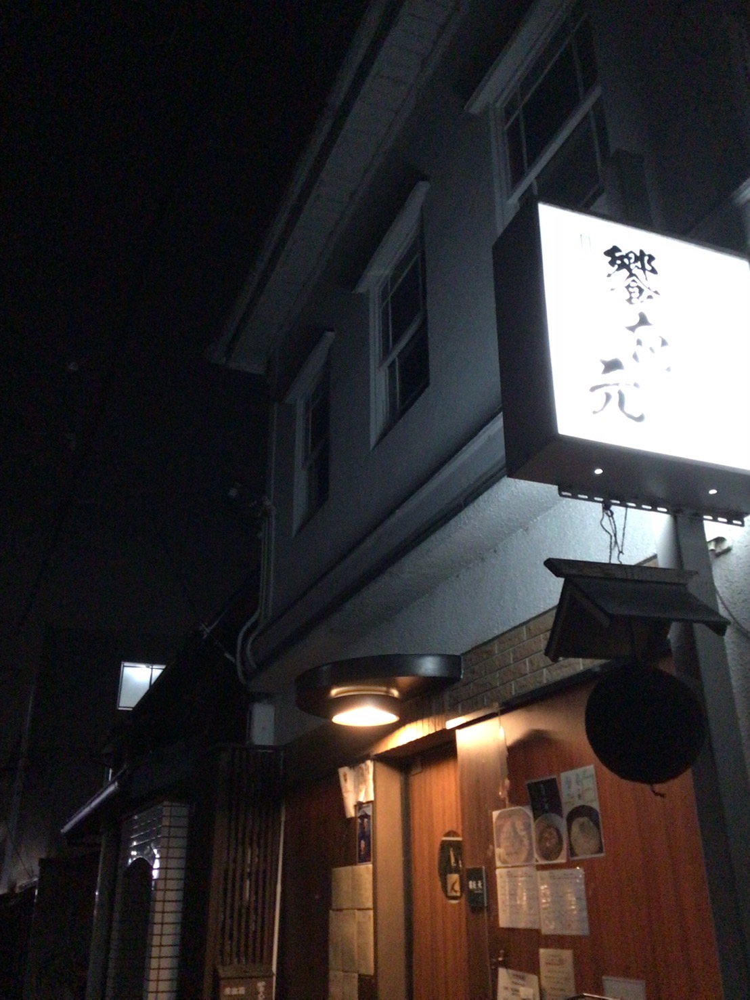

Seat-only reservations
By phone, or via the seat-only web booking. Last entry without a reservation is 11:00 PM. If you call by 11:00 PM, à la carte service can continue until up to 2:00 AM, depending on the evening.
Opens 6:00 PMLast entry 11:00 PM

KYOTO / MARUTAMACHI
Japanese cooking with a free spirit.
Kyouou Hajime, a small restaurant in Marutamachi, Kyoto.
FOOD, SAKE & A LITTLE FREEDOM
Dishes built on Japanese technique, and drinks to match: sake, whisky, shochu and wine. Every plate and every cup is a small encounter.
For sake in Kyoto, pairing matters. The owner, a certified sake master (shusho, the advanced qualification above kikizakeshi), will guide you to a cup that suits your taste and your food.
The owner visits the market almost every day to select fresh fish himself. Enjoy each fish at its best, prepared as sashimi and more.
From 9:00 PM, you are also welcome to drop in as a bar: sake, of course, and also whisky, shochu, wine and more, by the glass.
About Kyouou Hajime (JP) →
Japanese at the base, each dish in its own way.

Talk sake with the owner, a sake master and kikizakeshi.

Look for the small light in the alley.
Photos show examples of past dishes and drinks. Please check the menu page or ask in the restaurant for today's selection.
RESERVATION & ACCESS
Reservations are accepted by phone for both à la carte seats and courses. Online, you can book seats only, or one of the listed courses. For same-day or late-night requests, please call us.
By phone, or via the seat-only web booking. Last entry without a reservation is 11:00 PM. If you call by 11:00 PM, à la carte service can continue until up to 2:00 AM, depending on the evening.
By phone, or choose a listed course via web booking. Because of shopping and preparation, please reserve at least 2 days before your visit.
With a phone reservation made by 11:00 PM, we can stay open until up to 2:00 AM, depending on reservations and the evening. If there are no guests at 11:00 PM, we close at 11:00 PM.